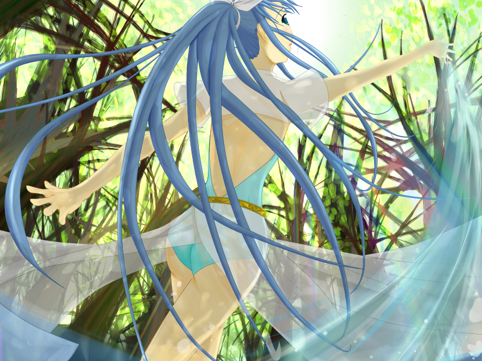

■踊り子？■

Creator
稟くん
Comment
頑張った点は構図と背景です。
右手と左手で遠近感が出ていたら幸いです。
背景は葉っぱをひたすら点描画よろしくテンテンしたので疲れました。
キャラクタに関しては最初に描こうとしていた某ティエネーさんと某大樹と水のヒーリングADVの影響を過分に受けている可能性があります。
また当初、服を着せる予定が無かったため急遽考えた服なので手抜き感が否めないですがご容赦ください。
それにしても水が流体に見えないorz。
<<
>>